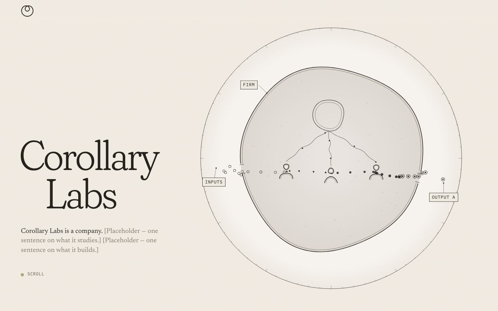
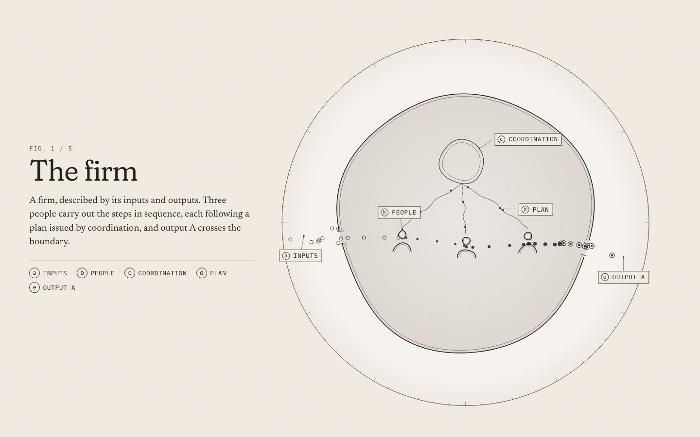
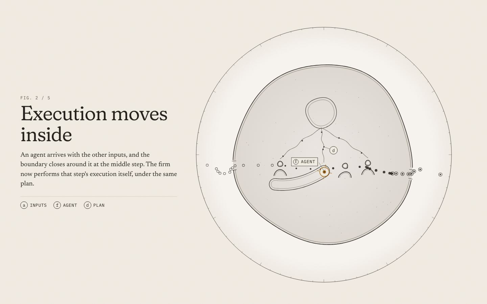
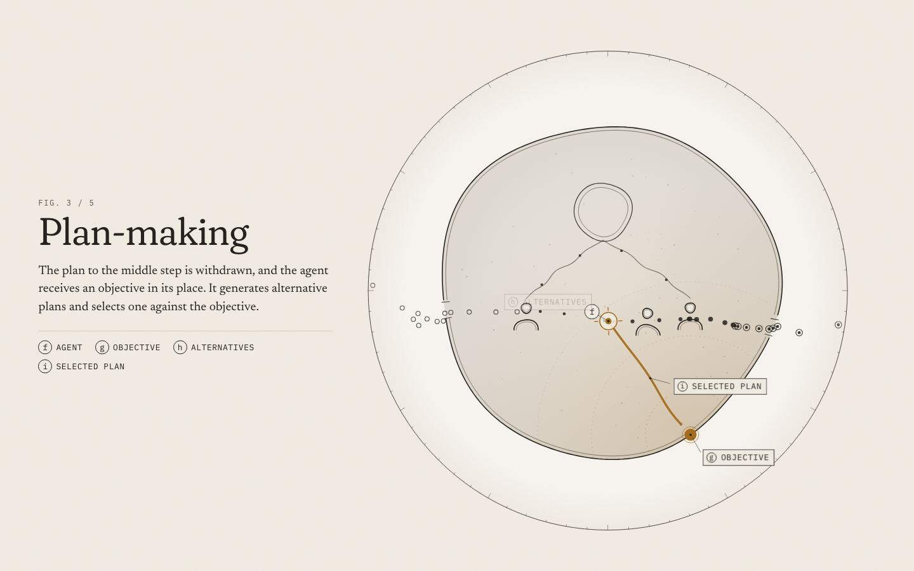
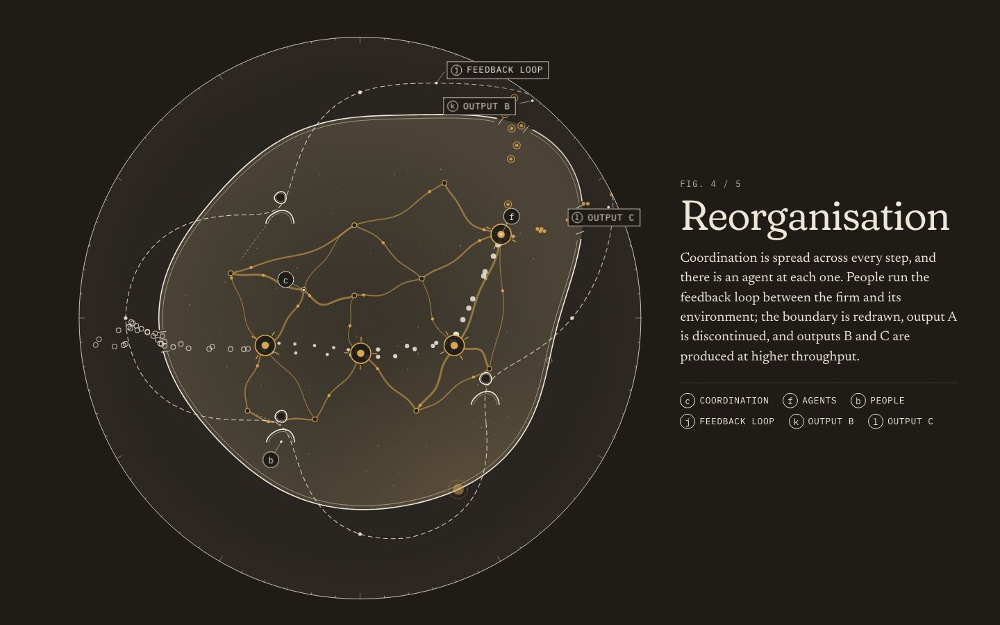
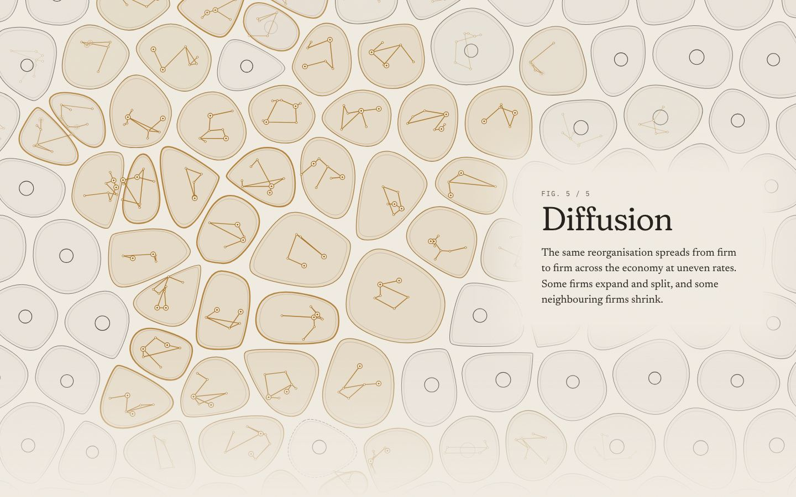
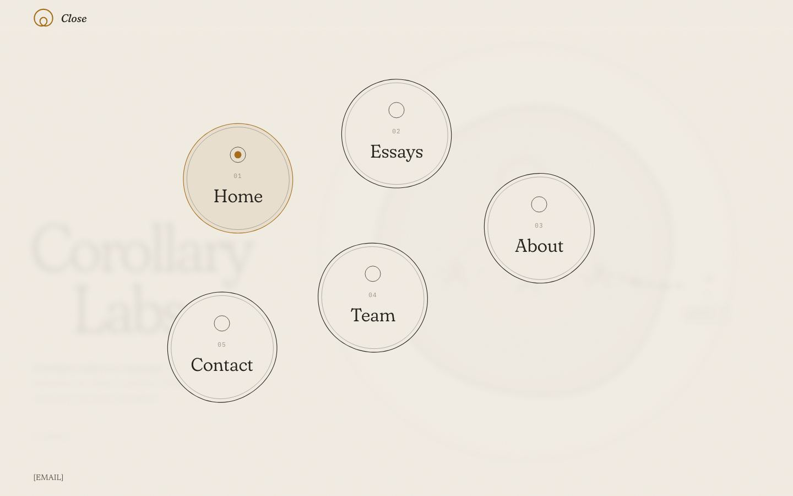
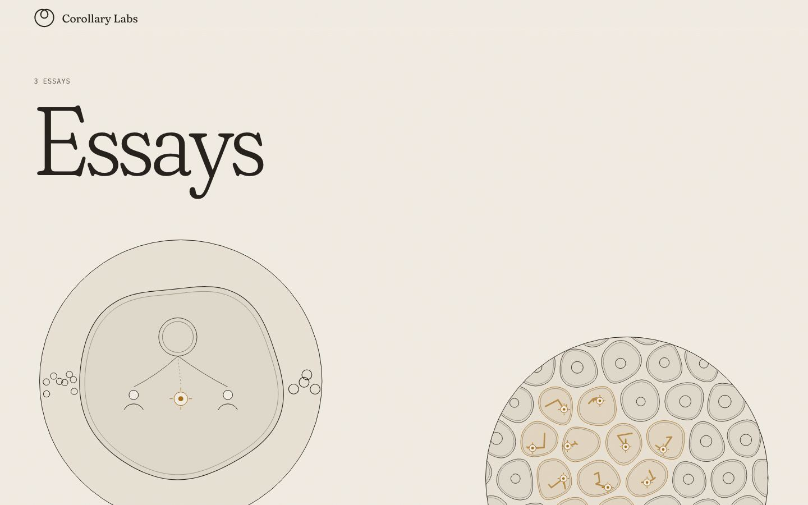
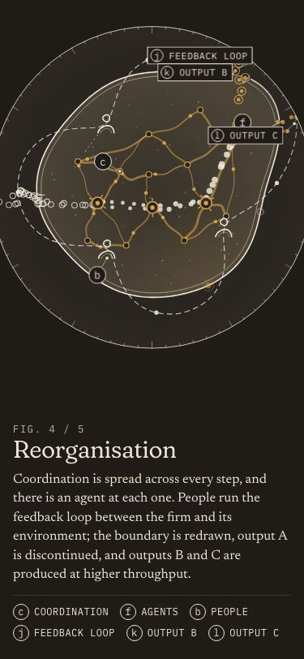

Corollary Labs · direction organic · pitch
A firm,
under the microscope
The firm is drawn as one living cell, seen through a round aperture. A cell is the natural picture of a thing that is defined by what crosses its boundary, and automation in the Superdark sense (a supplied input moving inside the boundary) has an exact biological shape: engulfment, the membrane folding around something from outside until it is part of the interior. From there the story is told as a sequence of figure legends beside a specimen that never stops moving: the agent is taken in, it is given an objective instead of a plan, the nucleus of coordination dissolves into a mesh, the membrane deforms without tearing and grows new outputs, and then the view pulls back into a tissue of firms where the same change spreads cell to cell, unevenly, with some firms dividing and their neighbours shrinking. Growth, not machinery: nothing is replaced in a single move; everything is reorganised continuously.
Why this, and what it breaks
Metaphor that carries the ontology
Membrane = the firm's input/output boundary. Engulfment = a supplied input produced inside. Chemical gradient = an objective (no plan, only a direction). Mesh = coordination spread across steps. Continuous deformation of the membrane = reorganisation as homotopy. Tissue = the economy; stain = diffusion.
The words stay economic
The picture is biological; every label and legend is about firms (inputs, plan, agent, objective, feedback loop, output B). No biology puns. Legends were written clean-room from the founder's words and the Superdark essay.
Breaks from Plotter
Navigation: Plotter has footer-only nav. Here a paper band with the mark and the name hides while you read down and returns when you scroll up; the mark divides into five daughter cells (one per page) when pressed, because a long scrolling specimen needs a way out at every point, and the dividing cell is the logo doing its job. Colour: a stained section, not white paper with green. Reading model: plate legends set on the paper beside a sticky specimen, with lettered keys (a, b, c) on the drawing, not captions under a full-bleed stage. The composition turns at fig 4 (specimen left and larger, legend right) and opens full-bleed at fig 5.
Page structure
- Home. Left: the name, large, soft serif, and the existing statement placeholders. Right (top on phones): the specimen in its aperture, alive; the cursor presses the membrane. Then five figure legends scroll past the sticky specimen (The firm · Execution inside · Plan-making · Reorganisation · Diffusion). At figure 5 the camera pulls back into the tissue and the aperture opens to fill the screen; the page ends in the tissue footer.
- Essays. A tray of round slides. Each essay gets its own generated specimen (a firm, a tissue, a mesh), seeded by its slug. The essay page keeps a quiet reading column, sidenotes in the margin, and the essay's slide above its contents.
- About. Statement, a live plate of figure 4 (the reorganised firm), and a colophon drawn as a specimen label.
- Team. One cell per person (portrait placeholder inside the cell), with [Name], [Role], one line.
- Contact. [EMAIL] set large beside the firm as it is drawn at the top of the home page.
- Footer (every page). A tissue: cells slowly reorganise; the one under the cursor stains. Links sit on top as round chips.
How the company introduces itself
It shows the thing it looks at before it says what it is. The first screen is the name and a living firm; the first sentence of the story is a figure legend ("A firm, described by its inputs and outputs…"), not a slogan. The statement line is the one already agreed for Plotter (Corollary Labs is a company. + two placeholders), so no new claim is made about the company.
Palette: bone, umber, ochre; fig 4 on dark umber
Revised after the first critic round: the original stain palette (violet and rose) read as histology. Now bone paper, umber ink, and one ochre accent, used only for the agent, the objective, the mesh, new outputs and the spread.
#F2EDE3#DDD4C2#25221C#585246#9A9384#A66D1AType
Display, titles, labels
Fraunces
Variable, with the SOFT axis at 100: the serifs round off, like a letter drawn in ink on damp paper. Labels on the drawings are Fraunces italic, lower case, the way hand annotations sit on a scientific plate.
Reading
Newsreader
A text serif built for long reading on screens; it carries the legends and the essays.
Keys, figure numbers, meta
IBM PLEX MONO
Added after the second critic round as a cold, precise counterweight to the soft serif: tracked capitals for keys, "FIG. 1 / 5", dates and the labels on the drawings.
Logo options
A · chosen · the limaçon
r = 1 + 3 cos θ, turned so the inner loop hangs from the top. One closed line that is a boundary and, through its inner loop, the input it has drawn inside itself. A mathematical curve (the founder liked a math logo) that reads as a cell engulfing something. It is the menu button; pressed, it divides.
B · the bud
A cell with a daughter budding from it: a corollary is what follows from a theorem, as a bud follows from a cell. Simple, warm, less exact.
C · wordmark only
labs
Lower-case Fraunces at SOFT 100, no symbol. The softness of the letters does the work; nothing is added (the founder disliked dots and a superscript "Labs").
Key frames









References
See REFERENCES.md beside this file: Golgi and Cajal plates (Public Domain Review) for the stained-section look; inconvergent's hyphae and differential line for growth; Sage Jenson's Physarum work for the mesh; Distill's Growing Neural CA for AI-as-local-rule inside cells; Emergence Magazine (Awwwards SOTD 2018) for soft serif reading; Oxman for the single thin circle as a field of view.
New copy for founder review
unreviewed The five figure titles and legends (clean-room writer; three edits after the critic round: "Execution inside" → "Execution moves inside", fig 5 "and the firms next to them shrink" → "and some neighbouring firms shrink"), the drawing labels (now lettered keys listed under each legend), the hero labels "inputs / firm / output A", "Close" on the menu button, "Colophon" on the About label, the meta description, the "Scroll" cue, "Draft, placeholders in brackets", "Fig. 4, Reorganisation" on About, the essay-figure labels "coordination issuing plans / coordination as a mesh", the Contact "Press" row, and alt text on canvases. Everything else is placeholder in [brackets].